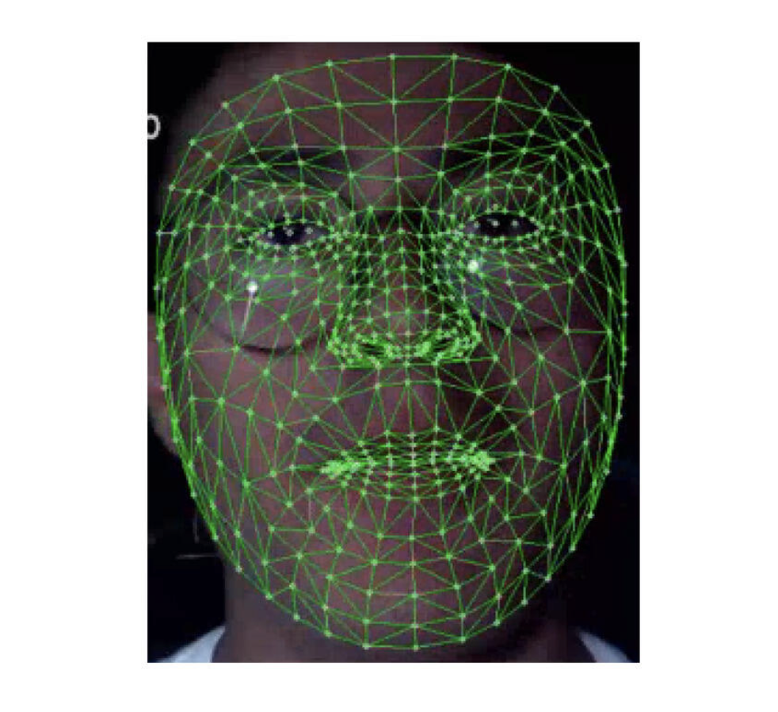

Section 2 of 12
Detecting the Driver's Face
Every later step depends on first finding the face and its key points in each video frame.
Before a system can measure an eye or a yawn, it has to answer two simpler questions for every frame: where is the face? and where exactly are the eyes, nose, and mouth inside it? This page covers the camera that captures the frames, the detector that finds the face, and the landmark model that pinpoints its features.
Capturing the driver's face
Camera placement
Where the camera sits decides what it can see. A camera on the steering column gets a nearly frontal view, but the wheel's spokes can block the face during turns. A camera near the rear-view mirror or the A-pillar stays clear of the wheel but sees the face from an angle. A phone on a dashboard mount is the cheapest option and works well when it faces the driver straight on. Viewing angle matters more than it seems: eye measurements like the Eye Aspect Ratio change when the face is seen from the side, a problem Section 10 returns to.
Visible light vs. near-infrared
An ordinary RGB camera, like a webcam or phone camera, sees what we see, so it struggles at night and in harsh sunlight. Production driver monitoring systems usually use near-infrared (NIR) cameras with their own small infrared LEDs. The driver can't see the light, but the camera gets an evenly lit grayscale image in complete darkness, and infrared often passes through sunglass lenses that block visible light. For a phone-based or webcam prototype, RGB is the practical choice, as long as the cabin has some light.
Frame rate and resolution
Frame rate decides whether quick events are caught at all. A normal blink lasts roughly 100 to 400 milliseconds. At 30 frames per second, that blink spans about 3 to 12 frames, enough to see it close and reopen. At 10 frames per second, a fast blink might fall into a single frame or be missed entirely. Resolution matters less: the face only needs enough pixels for the eye region to be clear. The 2026 system by Zambrano et al., for example, used an ordinary USB webcam at 640 × 480 pixels and 30 frames per second [3].
Face detection
A face detector takes a whole frame and returns a rectangle (a bounding box) around each face. Three families of detectors dominate:
Haar cascades (Viola-Jones)
The classic method slides a small window across the image and asks a chain of very simple questions, such as "is the eye region darker than the cheeks below it?" Each question compares the brightness of neighboring rectangles, which an integral image makes extremely cheap to compute. The questions are arranged as a cascade: a window that fails an early, cheap test is thrown away immediately, so the detector spends almost no time on background. It is very fast, but it mostly finds upright, frontal faces and is easily fooled by shadows.
HOG + linear SVM
This method describes each image patch by its Histogram of Oriented Gradients: it divides the patch into small cells and records which directions the edges point in each cell. A face has a characteristic edge pattern (the curves of the eyes, the line of the nose), and a linear Support Vector Machine learns to recognize it. The popular Dlib library's default face detector works this way. It handles lighting changes better than Haar cascades but still prefers frontal faces.
CNN-based detectors
Modern detectors use convolutional neural networks that learn their own features from thousands of labeled faces. They cope much better with turned heads, partial occlusion, and dim light. Lightweight versions designed for phones, such as Google's BlazeFace, which powers MediaPipe's face pipeline, run in real time on a mobile device.
| Detector | Speed on a CPU | Handles turned heads and poor light | Good choice when |
|---|---|---|---|
| Haar cascade | Very fast | Poorly | Hardware is extremely limited and the face is always frontal |
| HOG + SVM | Fast | Moderately | You use Dlib's 68-point landmarks, which expect its boxes |
| CNN (e.g., BlazeFace) | Fast on mobile hardware | Well | Building a modern phone or in-car system |
Practical tip: a driver's face barely moves between frames, so most real-time systems don't run the full detector on every frame. They detect the face once, then track it, re-running the detector only when tracking is lost. This saves a large share of the 33-millisecond frame budget from Section 1.
Facial landmark detection
A bounding box says where the face is, but drowsiness measures need precise points: the corners of the eyes, the edges of the eyelids, the lips. A landmark model takes the face box and returns the coordinates of a fixed set of named points. The same point number always means the same place on every face, which is what makes measurements like EAR possible.
Dlib's 68-point model
The most widely taught layout uses 68 points, predicted by an ensemble of regression trees that starts from an average face shape and refines it in small steps. It is fast on an ordinary CPU and returns 2D image coordinates. Use the explorer below to see how the 68 points are grouped.
One detail trips up many first implementations: the 68 points are usually numbered 1 to 68 in diagrams, but code stores them in a list that starts at 0. The right eye's points 37 to 42 are therefore indices 36 to 41 in Python.
MediaPipe Face Mesh
Google's MediaPipe Face Mesh goes much further: it estimates 468 points covering the whole face surface, and each point has a depth value, so it recovers a rough 3D face shape from a single ordinary camera. Recent driver monitoring systems favor it because it is fast, stable from frame to frame, and gives head-pose information almost for free. Zambrano et al. built their eye, mouth, gaze, and head-pose measurements entirely from these 468 points [3].

Because the mesh has so many points, each system picks a small subset for each measurement. For the right eye, Zambrano et al. use MediaPipe points 33, 160, 158, 133, 153, and 144 as p1 to p6 [3], which play the same roles as Dlib's points 37 to 42.
| Dlib 68-point | MediaPipe Face Mesh | |
|---|---|---|
| Number of points | 68 | 468 (478 with iris points) |
| Coordinates | 2D pixels | Normalized 3D (x, y, relative depth) |
| Face detector | Separate (usually HOG + SVM) | Built in (BlazeFace) |
| Head pose | Needs extra fitting (Section 5) | Easier, thanks to the depth values |
| Best for | Learning the concepts; CPU-only prototypes | Phones and modern real-time systems |
In code: finding the eye landmarks
This short Python program reads the webcam, runs MediaPipe's face landmarker on each frame, and draws the six right-eye landmarks used for EAR. Section 11 builds on it to compute EAR and raise an alert. It uses MediaPipe's current Tasks API; first download the face model file, face_landmarker.task, into the same folder.
import time
import cv2
import mediapipe as mp
from mediapipe.tasks import python as mp_tasks
from mediapipe.tasks.python import vision
RIGHT_EYE = [33, 160, 158, 133, 153, 144] # p1..p6, as used in [3]
options = vision.FaceLandmarkerOptions(
base_options=mp_tasks.BaseOptions(model_asset_path="face_landmarker.task"),
running_mode=vision.RunningMode.VIDEO, num_faces=1)
landmarker = vision.FaceLandmarker.create_from_options(options)
cap = cv2.VideoCapture(0) # 0 = default webcam
t0 = time.time()
while cap.isOpened():
ok, frame = cap.read()
if not ok:
break
h, w = frame.shape[:2]
rgb = cv2.cvtColor(frame, cv2.COLOR_BGR2RGB)
image = mp.Image(image_format=mp.ImageFormat.SRGB, data=rgb)
result = landmarker.detect_for_video(image, int((time.time() - t0) * 1000))
if result.face_landmarks:
lm = result.face_landmarks[0]
for i in RIGHT_EYE:
x, y = int(lm[i].x * w), int(lm[i].y * h) # normalized -> pixels
cv2.circle(frame, (x, y), 2, (0, 255, 0), -1)
cv2.imshow("Eye landmarks", frame)
if cv2.waitKey(1) & 0xFF == 27: # press Esc to quit
break
cap.release()
cv2.destroyAllWindows()Three things to notice. MediaPipe expects RGB images while OpenCV delivers BGR, hence the conversion. MediaPipe returns coordinates between 0 and 1, so they are multiplied by the frame's width and height to get pixels. And in video mode every frame needs a timestamp that always increases, which the program takes from the clock.
Key takeaways
- Camera placement and angle affect every later measurement; near-infrared cameras solve most nighttime problems.
- About 30 frames per second is needed to reliably catch blinks, which last only 100 to 400 ms.
- Face detection finds a box; landmark detection finds precise, numbered points inside it.
- Dlib's 68 points are ideal for learning; MediaPipe's 468 3D points power most recent systems.